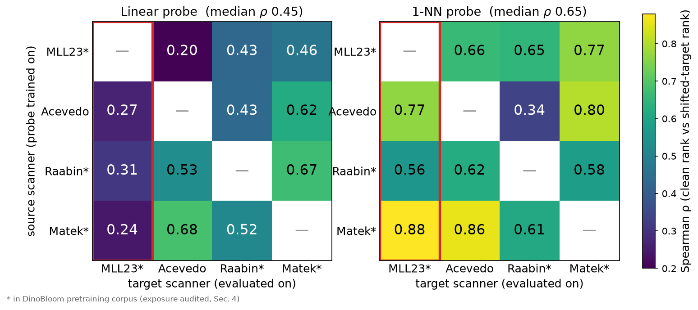
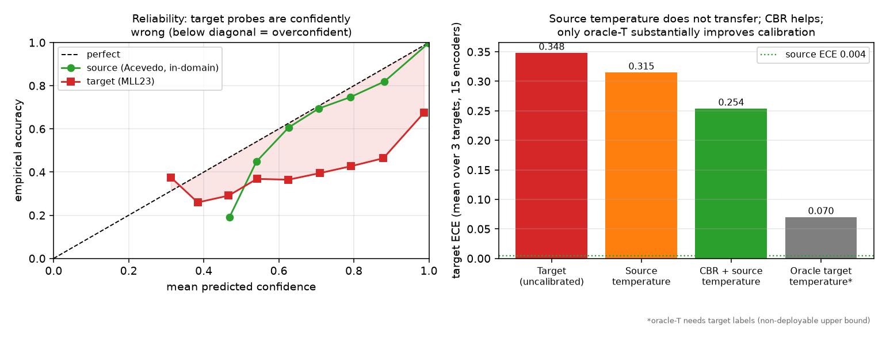
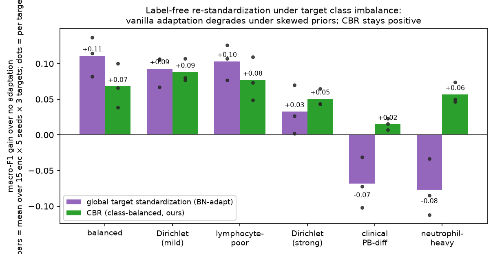

Every encoder is within 0.98–0.997 macro-F1 in-domain, so the left column is decided by hundredths of a point. On the target it spreads to 0.386–0.704. Specialization does not settle it either: the two hematology FMs finish 1st and 10th, the two pathology FMs 5th and 14th.
TL;DR
In-domain accuracy and in-domain confidence both fail to predict cross-scanner reliability. Fifteen frozen encoders sit at 0.98–0.997 macro-F1 on the source scanner; move to a new one and macro-F1 drops 34–72%, the ranking re-orders, and calibration error goes from 0.004 to 0.35. Label-free adaptation looks safe on balanced test sets and fails under real blood-differential class priors.
Abstract
Auditing frozen embeddings, not training new classifiers
Frozen hematology foundation-model (FM) embeddings reach near-saturated in-domain white-blood-cell (WBC) accuracy, but clinical deployment demands reliability across scanners, sites, stains and preparation pipelines. We audit 15 frozen encoders (hematology, pathology, and general vision encoders) across four public single-cell acquisition domains along two axes: accuracy robustness and calibration.
In-domain linear-probe macro-F1 is saturated (0.98–0.997), yet cross-dataset macro-F1 drops 34–72% and rankings re-order: DinoBloom-L, the in-domain best, falls to 10th of 15 on the most-shifted target (MLL23) at the benchmark's shared 224-px input, while RedDino and several general and pathology encoders outrank it. Rank transfer is probe-dependent: 1-NN retrieval is more stable on average than a source-fitted linear head (median ρ 0.65 vs 0.45), but neither clean-domain probe universally predicts target robustness. Calibration also collapses: source-trained probes are nearly calibrated in-domain (Expected Calibration Error [ECE] 0.004) but become confidently wrong off-domain (ECE 0.35), and source-fitted temperature scaling transfers poorly.
We further audit pretraining exposure and identify MLL23 as corresponding to DinoBloom's internal cohort; because the only DinoBloom-held-out dataset is also our source domain, this benchmark cannot isolate exposure from scanner-associated distribution shift. Finally, label-free adaptation and marginal-entropy-based model selection appear safe under balanced evaluation but fail under realistic WBC class-prior shift. Class-Balanced Re-standardization (CBR), a training-free pseudo-label-balanced feature normalization, improves all evaluated target-prior scenario means and partially improves calibration, although encoder-level exceptions and residual miscalibration remain. These results argue that hematology FM benchmarks must jointly audit accuracy, calibration, exposure, and class-prior robustness.
Results
Six findings
Source domain is Acevedo (BloodMNIST@224, CellaVision DM96); targets are MLL23/Metafer, Matek-LMU/M8 and Raabin. Every number is a mean over five source splits on the fixed five-class WBC intersection.
Hematology FM
Axis A · accuracy
The in-domain winner is 10th on the shifted scanner
DinoBloom-L tops the source domain and lands 10th of 15 on MLL23 (0.552), 0.15 macro-F1 behind RedDino (0.704) and behind DINOv2 and a pathology encoder as well. Phikon falls further — 4th in-domain to 14th. Paired bootstraps over the MLL23 examples put the RedDino−DinoBloom-L, DinoBloom-S−DinoBloom-L and Lunit−Phikon gaps at 95% CIs that exclude zero, so this is not sampling noise.
Specialization does not decide it either: the two pathology FMs land at 0.609 (Lunit) and 0.410 (Phikon), the widest within-family split on the board.
Axis A · rank transfer
Clean-domain ranking is a weak predictor from every source
Spearman ρ between the in-domain and target rankings falls to 0.27 on the most-shifted target. Running every domain as the source in turn, ρ stays low across all 12 source–target pairs (median 0.45) and the in-domain-best encoder is dethroned in 8 of 12.
Axis A · probe choice
Which probe you use changes the answer
1-NN retrieval transfers ranks better on average than a source-fitted linear head (median ρ 0.65 vs 0.45) — local neighbourhood geometry survives the scanner change better than a fitted decision boundary. But it is not a safe selector either: on Acevedo→Raabin 1-NN drops to ρ 0.34, below the linear probe's 0.43.
Sweeping eight source-only heads (logistic regression across six orders of regularization, linear SVM, nearest-centroid, cosine centroid, 1-NN) leaves the pattern intact: every linear head lands at ρ 0.13–0.38 on MLL23 while the local-geometry heads reach 0.61–0.77. Robustness rankings belong to the encoder and the probe, not the representation alone.
Axis B · calibration
Confidence collapses, and source calibration does not transfer
Source-trained probes are nearly perfectly calibrated in-domain (ECE 0.004, NLL 0.03) and become confidently wrong off-domain (ECE 0.35, NLL 3.2) — roughly 80× worse. Fitting a temperature on held-out source data barely helps (0.35→0.32), because the source probe is already calibrated and the fitted temperature is ≈1. Only oracle target temperature scaling, which needs target labels and is not deployable, substantially repairs it (→0.07).
The practical fix is small and local: fitting the temperature on 16–32 labelled target images recovers most of the gap (ECE 0.088 at K=32 against an oracle 0.074). Calibrate per scanner, on a handful of slides.
Exposure audit
The benchmark cannot separate exposure from shift
MLL23 corresponds to DinoBloom's internal cohort (the same 41,906-image Munich Leukemia Laboratory dataset), and Matek and Raabin are also in its pretraining corpus. That leaves Acevedo — our source — as DinoBloom's only held-out dataset, so there is no leakage-free target: DinoBloom's target-side numbers measure transfer to in-pretraining domains, not clean held-out generalization.
We report exposure status rather than assume its effect. In the reverse direction DinoBloom transfers best to its held-out Acevedo, which is inconsistent with a simple leakage-inflation story but confounded with Acevedo being an easier domain. Public hematology benchmarks are exposure-ambiguous, and that is worth stating out loud.
Class-prior shift
Label-free adaptation passes on balanced data and fails on clinical priors
Real differentials are neutrophil-dominated, so we resampled each target to six class priors. Global target standardization (BN-adaptation) helps on balanced and mild priors but hurts on realistic ones (−0.07 clinical, −0.08 neutrophil-heavy; harmful in 6 of 18 scenarios). SHOT/IM is worse (mean −0.029, harmful in 10/18), and BBSE — a label-shift estimator — hurts in all 18: it corrects the label prior, not the feature-space scanner shift.
Model selection breaks the same way. Marginal prediction entropy looks oracle-like under balanced sampling and carries 0.25–0.37 selection regret under skew, so we do not have a reliable label-free way to pick an encoder at deployment time.
CBR · the fix
Class-balanced re-standardization, and what it does not fix
CBR estimates target feature statistics from pseudo-label-balanced class means instead of the raw batch mean, so the statistics stop tracking whichever class dominates the batch. It is training-free, label-free and single-batch, and it is positive in all 18 target×prior scenario means (mean +0.059, hierarchical bootstrap CI [+0.046, +0.073]), recovering about 61% of a true-label oracle.
Two honest caveats. Per encoder, 29 of the 270 encoder×scenario cells are still negative (worst −0.09, mostly DinoBloom under extreme skew) — against 96/270 for global standardization and 149/270 for SHOT/IM. And it only partly helps calibration: ECE 0.35→0.29 alone, →0.25 with source temperature, still far above in-domain. Accuracy and calibration are separate deployment problems.
Table 1
Cross-dataset leaderboard
Linear-probe macro-F1, mean over 5 seeds, source = Acevedo, sorted by MLL23. The MLL23 # column is where the re-ranking becomes legible. Bold = strict column max.
Encoder
Acevedo (source)
Matek
MLL23
MLL23 #
Raabin
RedDino (hema)
0.994
0.544
0.704
1
0.450
DinoBloom-S (hema)
0.995
0.613
0.671
2
0.341
DINOv2-B
0.991
0.595
0.650
3
0.444
DINOv2-S
0.988
0.505
0.634
4
0.248
Lunit-DINO (path)
0.995
0.409
0.609
5
0.288
DINOv2-L
0.991
0.555
0.588
6
0.315
ViT-B (IN)
0.993
0.616
0.571
7
0.439
CLIP-L/14
0.986
0.557
0.568
8
0.290
DinoBloom-B (hema)
0.997
0.635
0.553
9
0.448
DinoBloom-L (hema)
0.997
0.648
0.552
10
0.385
BiomedCLIP
0.980
0.410
0.526
11
0.280
EVA-02 (IN)
0.991
0.486
0.486
12
0.378
ResNet-50 (IN)
0.980
0.357
0.416
13
0.304
Phikon (path)
0.995
0.448
0.410
14
0.265
CLIP-B/16
0.981
0.387
0.386
15
0.337
Sup. ResNet-18 (scratch)
0.908
0.584
0.255
—
0.096
Table 1 — Cross-dataset leaderboard.hema = hematology FM, path = pathology FM, IN = ImageNet-supervised. DinoBloom-L is in-domain #1 by unrounded macro-F1 (it rounds to a tie with DinoBloom-B). The supervised ResNet-18 trained from scratch is a non-frozen baseline, not part of the 15-encoder ranking.
Read the Acevedo column and then the MLL23 column: a spread of 0.017 in-domain becomes a spread of 0.318 on the shifted scanner, and the order barely survives.
Figures
What the audit looks like

Figure 1 — Clean-to-target rank transfer is probe-dependent. Spearman ρ between in-domain and shifted-target encoder rankings (n = 15), linear probe (left) and 1-NN (right). 1-NN is more stable on average (median ρ 0.65 vs 0.45) but not uniformly predictive. MLL23, the largest shift, is hardest for both — and is not leakage-free for DinoBloom.

Figure 2 — Calibration collapses off-domain. Target probes sit below the diagonal (confidently wrong). Source-fitted temperature scaling barely helps because the source probe is already calibrated; only oracle target temperature scaling, which needs target labels, substantially improves it.

Figure 3 — Class priors decide whether adaptation helps. Global target standardization hurts on realistic neutrophil-dominated priors; CBR stays positive across all 18 evaluated target-prior scenario means (bars = mean gain over no adaptation, dots = per target).
Protocol
How the audit is run
Frozen-embedding protocol
Each encoder is frozen and its CLS/pooled features extracted once. We fit source-domain standardization and an L2-regularized logistic probe (and a 1-NN probe) on the source, then evaluate zero-shot on the target acquisition domains. The target is never touched at training time — that is the deployment situation being modelled.
Domains
Source: Acevedo (PBC) via BloodMNIST@224, 10,298 WBC images from a CellaVision DM96. Targets: MLL23/Metafer, Matek-LMU/M8, and Raabin (smartphone + Olympus). All evaluation uses the fixed five-class WBC intersection, and the full source×target matrix is run including reverse directions.
Encoders (15, frozen)
Hematology FMs (DinoBloom-S/B/L, RedDino), pathology FMs (Phikon, Lunit-DINO), general SSL and VLMs (DINOv2-S/B/L, EVA-02, CLIP-B/16, CLIP-L/14, BiomedCLIP), ImageNet-supervised ViT-B and ResNet-50, plus a supervised ResNet-18 trained from scratch as a non-frozen reference. All run at 224×224 for comparability, with a 224-vs-518 resolution check.
Metrics
Macro-F1 as the primary metric, plus Spearman rank correlation between in-domain and target rankings, effective robustness, relative gap, per-class recall, and bootstrap 95% CIs over five source splits. Calibration is reported as ECE, adaptive-ECE, NLL and Brier.
Label-shift evaluation
Because real differentials are imbalanced, every label-free method is evaluated on the balanced target and on targets resampled to six class priors, including a peripheral-blood-like and a neutrophil-heavy prior. One canonical experiment (15 encoders × 5 source seeds × 3 targets × 6 priors × 25 draws) drives every adaptation number.
Exposure audit
Pretraining corpora are checked against every evaluation dataset and the overlap reported, rather than assumed absent. A controlled fine-tuning experiment confirms that scanner exposure can selectively lift same-domain transfer in principle.
What CBR does
Instead of re-standardizing target features with the raw batch mean and standard deviation, CBR uses the mean of the per-pseudo-class means and a pooled within-class standard deviation, so the statistics stop tracking the majority class. Empty pseudo-classes are dropped, singletons contribute to the mean only, and a full collapse falls back to the source standard deviation. Batches of ≥ 32 cells are recommended.
Guidance
What to do with this today
If you are choosing a frozen encoder for a WBC pipeline, the in-domain leaderboard everyone reports is close to useless for that decision — all 15 encoders are within 0.017 macro-F1 of each other, and the ordering does not survive a scanner change.
Do not pick an encoder on in-domain accuracy.
It is saturated, and rank transfer to a shifted scanner is weak from every source domain (median ρ 0.45, in-domain-best dethroned in 8 of 12 source–target pairs). Validate on a domain that actually differs from your development scanner.
Do not trust off-domain confidence, and do not expect a source-fitted temperature to travel.
ECE goes 0.004 → 0.35 across a scanner change, and source temperature scaling only moves it to 0.32. Recalibrate per scanner — 16 to 32 labelled target images gets most of the way to the oracle.
Test adaptation under your real class prior, not a balanced split.
Global BN-style target standardization and SHOT/IM both look fine on balanced targets and lose 0.07–0.08 macro-F1 on neutrophil-dominated ones. If your evaluation is balanced and your deployment is not, the evaluation is not measuring the deployment.
If you re-standardize at test time, do it class-balanced.
CBR is a few lines, needs no labels and no training, and was positive in every evaluated target-prior scenario mean (mean +0.059) — with 29 of 270 per-encoder cells still negative, so validate it for your encoder before relying on it.
State pretraining exposure in the paper.
Three of our four public datasets are in DinoBloom's pretraining corpus, which we could only establish by reading the model and dataset papers side by side. Benchmarks that do not report this cannot separate memorization from generalization — and neither can ours.
Limitations
What this audit does not settle
No leakage-free DinoBloom target. All three transfer targets are in DinoBloom's pretraining corpus and its only held-out dataset is our source, so exposure and domain difficulty stay confounded for that model family. The broader conclusion rests on the other encoders and on every source–target direction.
Modest power over 15 encoders. An individual Spearman ρ over 15 points is noisy, so we lean on CI-separated spreads and rank re-ordering rather than on any single correlation, and we describe the effect as scanner-associated cross-dataset shift rather than isolating the scanner itself.
CBR is transductive and pseudo-label-dependent. It needs a batch of target cells at test time, it recovers about 61% of a true-label oracle, it is noisy below 32 cells, and it is negative in 29 of 270 encoder×scenario cells — mostly for DinoBloom encoders under extreme skew.
Scope. Five WBC classes, one stain family per dataset, and image-level (not patient-level) splits, because patient identifiers are not consistently available across these public datasets. The in-domain split is used only as a clean-ranking proxy; every deployment claim rests on cross-dataset transfer.
Citation
BibTeX
Accepted as an oral at HemaRAI 2026, a MICCAI 2026 satellite event; the Springer LNCS proceedings entry does not exist yet, so cite it as a workshop presentation for now. This page will switch to the proceedings (and arXiv) entry the day either is live.
cite this work
@misc{sharma2026hematologyfm,
title = {Can You Trust Frozen Hematology Foundation Models under Acquisition Shift?},
author = {Sharma, Jai Kumar and Tapadiya, Peeyush},
year = {2026},
howpublished = {HemaRAI Workshop at MICCAI 2026},
note = {Workshop oral}
}